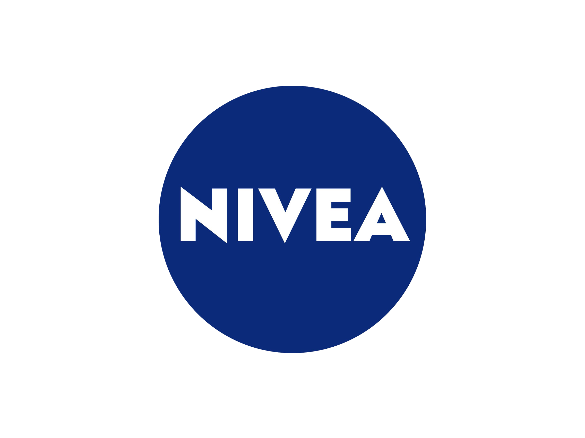
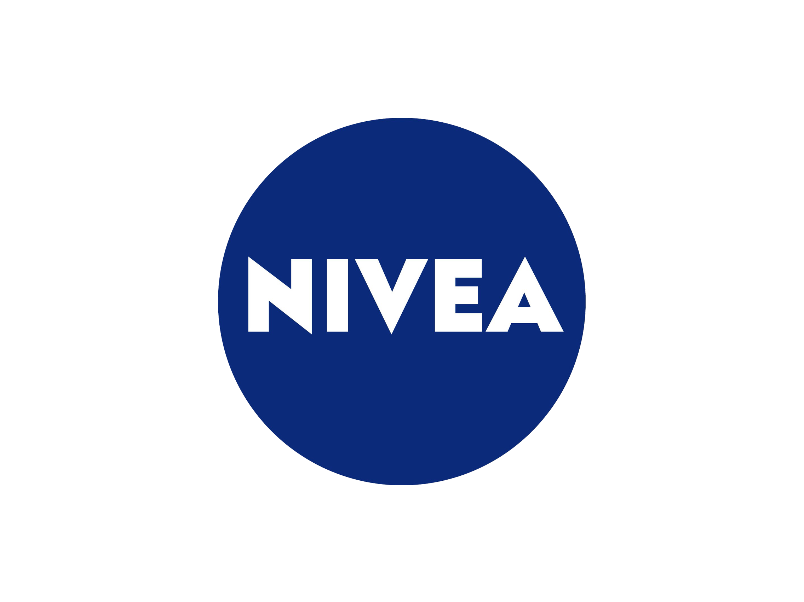

HISTORIA QUE TU HICISTE, HISTORIA POR HACER ...
1941 - 1950
El equipo blanco trató de paliar los efectos que tuvo la Guerra Civil (1936-39), que le dejó sin sus figuras más emblemáticas. Se produjeron importantes incorporaciones como Pruden, Corona y Bañón. En 1943, en semifinales de Copa, el
Real Madrid se enfrentó al Barcelona. En Les Corts, el once azulgrana ganó por 3-0. En la vuelta, los blancos eliminaron a su rival gracias a una extraordinaria remontada. El Madrid venció 11-1. Aquí nació la eterna rivalidad entre ambos
clubes.
El 15 de septiembre de 1943, Santiago Bernabéu se estrenó como presidente del club. Comenzó un legendario mandato en el que la entidad logró grandes gestas. Tomó posesión de su cargo con la idea de establecer lazos de concordia entre
todas las entidades. En 1948 fue nombrado presidente de honor y emérito de la institución blanca “por su buen quehacer y sus continuos desvelos por la Sociedad Real Madrid Club de Fútbol”.
El Real Madrid se enfrentó en la final al Valencia (9 de junio de 1946), diez años después de que el equipo ganase su última Copa de España. En el estadio de Montjuïc el conjunto blanco fue el dueño y señor del partido. Ganó a los
valencianistas por 3-1, logrando un nuevo título de Copa. El alcalde de Madrid entregó a Ipiña la Medalla Deportiva de la Ciudad por haber disputado 237 partidos oficiales. Cada jugador y el entrenador recibieron una cartera de piel con
un billete de mil pesetas (6€).
1951 - 1960
El fútbol europeo adquirió un gran nivel. Consciente de ello, a principios de los años 50 el prestigioso periodista francés Gabriel Hanot ideó una competición en la que participasen los equipos campeones de cada Liga europea. Al proyecto
se sumó su colega Jacques Ferrán. Ambos redactaron un reglamento que llegó a la sede de la Unión Europea de Fútbol (UEFA). La propuesta gustó a los dirigentes del periódico francés ‘L’Equipe’, que organizaron el campeonato.
Nombraron una comisión con Santiago Bernabéu como uno de sus vicepresidentes. El campeonato se hizo realidad en 1956. El Real Madrid ganó la primera Copa de Europa de la historia el 13 de junio de ese año. Fue el inicio de las cinco
consecutivas que consiguió. Logró un hito mundial bajo la figura de uno de los mejores futbolistas de la historia, Alfredo Di Stéfano, y durante la presidencia de Bernabéu.
El Madrid descubrió a Di Stéfano en las Bodas de Oro del club (1952), cuando el equipo se enfrentó al Millonarios (4-2). Desde entonces fue un objetivo madridista y al año siguiente debutó como jugador merengue. Se convirtió en el mejor
futbolista de la historia blanca. Con él en la plantilla, la institución vivió su época más gloriosa. Recibió dos Balones de Oro (1957 y 1959) como gran estrella del equipo que reinó en Europa cinco años consecutivos. Su fútbol encandiló
a todos. Creó escuela y sentó cátedra.
En la temporada 1959-1960, el exjugador madridista Miguel Muñoz cogió las riendas del Real Madrid. Ganó la Quinta Copa de Europa en su primera campaña como técnico. Se convirtió en el primer futbolista que logró el trofeo europeo como
jugador (en tres ocasiones) y entrenador. En 1960, los merengues se coronaron también reyes del mundo al lograr la primera edición de la Copa Intercontinental (Real Madrid 5-1 Peñarol de Montevideo).
1961 - 1970
En la temporada 1961-62 el Real Madrid volvió a firmar una gran actuación con doblete (Liga y Copa) y el subcampeonato europeo. El 18 de marzo de 1962 el Madrid entonó un nuevo alirón en su estadio, con dos jornadas de antelación. El 8
de julio de 1962 el Madrid venció al Sevilla en la final de la Copa por 2-1.
Líder en España y en el continente europeo. El 11 de mayo de 1966, el Real Madrid volvió a conquistar Europa, frente al Partizán (2-1). Sin Di Stéfano y Puskas, el veterano era Gento. Cerraban el once titular Araquistáin, Pachín, Pedro de
Felipe, Sanchís, Pirri, Zoco, Serena, Amancio, Grosso y Velázquez. El mismo año que se gana la sexta Copa de Europa, varios jugadores se fotografiaron emulando a los Beatles. Desde entonces se les denominó el Madrid Yeyé por el coro de la
canción de la banda británica ‘She Loves You’.
1971 - 1980
En Liga, el equipo se mostró muy sólido en casa en la campaña 1978-79. Sólo se llevaron un punto del Bernabéu cinco rivales: Espanyol, Sevilla, Hércules, Las Palmas y Atlético de Madrid. Molowny sacó el máximo rendimiento a sus jugadores
y en campo contrario también marcó diferencias. El triunfo en El Molinón (0-1, con gol de Santillana) fue clave para que el equipo merengue conquistase la sexta Liga en propiedad.
La brillante actuación de los merengues se empañó con la muerte del presidente del club. El Real Madrid quiso tener un gesto de agradecimiento a título póstumo hacia la figura de Santiago Bernabéu. El objetivo era que su gran labor en la
institución perdurase en la memoria colectiva. El 31 de agosto de 1979 se celebró la primera edición del trofeo que llevaba su nombre. Participaron cuatro de los grandes del fútbol continental: Real Madrid, Ajax, Bayern Múnich y Milan.
1981 - 1990
En 1984, el Castilla se proclamó campeón de Segunda División bajo las órdenes de Amancio y con la magnífica actuación de cinco futbolistas: Pardeza, Sanchís, Míchel, Martín Vázquez y Butragueño. Estas perlas de la cantera fueron un
descubrimiento y Di Stéfano no dudó en subirlos progresivamente al primer equipo. La eclosión de este grupo llegó a partir de 1985, con la conquista de cinco Ligas consecutivas e importantes récords, como el de máximo realizador de la
competición con 107 goles.
El delantero mexicano Hugo Sánchez tuvo mucho que ver en dichos éxitos. Junto a los veteranos Juanito, Valdano y Santillana, se ensambló a la perfección con la ‘Quinta’. En sus siete temporadas de blanco marcó 251 goles, siendo Pichichi
en cuatro de ellas. En la retina de todos los madridistas han quedado sus famosas celebraciones con voltereta incluida.
En esta década, el Real Madrid también logró su primer título de la UEFA. Fue en la temporada 1984-85. Derrotó en una final a doble partido al Videoton. Un conjunto hasta entonces desconocido que había dejado fuera de combate al PSG,
Partizán de Belgrado y Manchester United. En la campaña siguiente, los blancos revalidaron el título gracias a una remontada impensable. Tras caer en la ida de octavos 5-1 ante el Borussia Mönchengladbach, tiraron de épica en el choque de
vuelta y con dos tantos de Valdano y otros dos de Santillana lograron el pase a cuartos (4-0).
1991 - 2000
Después de demostrar sus dotes como técnico en el Tenerife, capaz de generar un fútbol atractivo y eficaz, Valdano regresó al Real Madrid en 1994. Con los fichajes de Redondo, Laudrup, Amavisca y Cañizares, el conjunto madridista ganó la
Liga esa temporada. La misma campaña en la que debutó el canterano Raúl. El 29 de octubre, con tan sólo 17 años, el joven madrileño cubrió la baja de Martín Vázquez en La Romareda, cuajando un excelente partido. Sería el comienzo de una
leyenda.
A comienzos de 1995, el Real Madrid de Valdano le endosó un 5-0 al Barça de Johan Cruyff en el Santiago Bernabéu. Un encuentro mágico que fue televisado y seguido por más de diez millones de espectadores. Pero los malos resultados
cosechados en el curso 95-96 obligaron a Lorenzo Sanz a contratar a Fabio Capello, uno de los técnicos más cotizados del fútbol europeo. El italiano contó con un plantel de ensueño. Los fichajes de Seedorf, Suker, Mijatovic y Roberto
Carlos, junto a los Raúl, Hierro o Redondo, llevaron al Madrid a conquistar de nuevo el campeonato liguero.
El 20 de mayo de 1998 fue un día histórico para el madridismo. 32 años después y bajo las órdenes de Jupp Heynckes, el Real Madrid volvía a la cima europea tras derrotar en la final de la Liga de Campeones a la Juventus. Un tanto de Pedja
Mijatovic en el minuto 66 mandaba la Séptima desde el Amsterdam Arena a las vitrinas del Santiago Bernabéu. En diciembre de ese mismo año, pero en esta ocasión bajo las órdenes de Guus Hiddink, el Madrid conquistó la segunda
Intercontinental.
En 1999, y tras toda una vida ligada al club blanco como futbolista, Vicente del Bosque regresó para dirigir al primer equipo. El salmantino consiguió asentar en la plantilla una filosofía que la convertiría en la mejor del continente. El
primer título llegó en el 2000: la Octava Copa de Europa. Ese mismo año, Florentino Pérez aterrizó en la presidencia blanca y fichó a uno de los mejores jugadores del planeta, Luis Figo.
2001 - 2010
Vicente del Bosque continuó como entrenador madridista hasta 2003. Su filosofía y estilo de juego hicieron del Madrid un equipo campeón. El conjunto blanco celebró durante su estancia en el banquillo la consecución de otra Copa de
Europa, otra Intercontinental, dos campeonatos nacionales, una Supercopa de España y una Supercopa de Europa. Una trayectoria sólo comparable con la del Real Madrid de los años 50 y 60.
La gestión de Florentino Pérez representó un profundo cambio en las estructuras del club. Saneó la economía y realizó una profunda transformación. Impulsó una completa renovación del Santiago Bernabéu, creó la nueva Ciudad Deportiva de
Valdebebas e inauguró el estadio Alfredo Di Stéfano. En el capítulo deportivo, cumplió los deseos de la afición: vestir de blanco a Zidane, Ronaldo y Beckham y conquistar la novena Copa de Europa. Al comienzo de 2006 dimite tras un
balance al que además se suman dos Ligas, una Intercontinental, dos Supercopas de España y una Supercopa de Europa.
El 3 de julio de ese año, Ramón Calderón toma posesión de la presidencia del Real Madrid. Bajo su mandato, el equipo gana dos Ligas y una Supercopa de España. El 16 de enero de 2009 dejó el cargo, que pasó a ocupar Vicente Boluda,
vicepresidente hasta ese momento. El 1 de junio de 2009, Florentino Pérez es nombrado presidente del Real Madrid.
En su segunda etapa, continuó ilusionando al madridismo con los fichajes de los mejores jugadores y entrenadores del mundo. Llegaron futbolistas de la talla de Cristiano Ronaldo o Benzema, entre otros, y el técnico José Mourinho. El
portugués aterrizó en el Santiago Bernabéu una semana después de haberse proclamado campeón de Europa con el Inter de Milán en ese mismo escenario.
2010 - 2020
En los primeros años de esta nueva década llegaron a las vitrinas los tres trofeos conquistados por el Real Madrid de José Mourinho. El más destacado, la Liga de la campaña 2011-12, que ganaron con un récord de 100 puntos, la mayor cifra
jamás lograda hasta entonces en la historia del campeonato, y 121 goles. También levantaron ante el Barcelona una Copa del Rey y una Supercopa de España.
En junio de 2013, Carlo Ancelotti llegó al Real Madrid. El italiano conquistó cuatro títulos en el conjunto blanco. El primero de ellos fue la decimonovena Copa del Rey, venciendo en la final al Barcelona. El 24 de mayo de 2014 los
blancos volvieron a levantar la Copa de Europa. Con su victoria por 4-1 ante el Atlético se llevaron la Décima. Ramos, Bale, Marcelo y Cristiano certificaron el triunfo.
En la segunda temporada de Ancelotti llegaron dos nuevos éxitos: la Supercopa de Europa frente al Sevilla y el primer Mundial de Clubes del Real Madrid ante el San Lorenzo. De esta forma, se cerró el 2014 con cuatro títulos. En junio de
2015, Rafa Benítez regresó al club en el que se formó para dirigir al conjunto blanco. En enero de 2016, Zidane se convirtió en entrenador del primer equipo tras una trayectoria de leyenda como jugador. Su primera temporada se cerró con
la conquista de la Undécima ante el Atlético en Milán.
La segunda campaña del técnico francés estuvo repleta de triunfos. El Real Madrid ganó la Duodécima, y se convirtió en el primer equipo en repetir título en la época Champions. Junto a la máxima competición continental, también se ganaron
la Liga 2016-17, la tercera Supercopa de Europa y el segundo Mundial de Clubes, que se disputó en Japón. La temporada 2017-18 se empezó levantando una nueva Supercopa de Europa, al ganar al Manchester United, y con la décima Supercopa de
España. En diciembre de 2017 llegó un nuevo Mundial de Clubes, y se batió el récord de títulos en un año con cinco.
El 2018 también forma parte de la leyenda madridista gracias a la Decimotercera, lograda ante el Liverpool en una en una final que se jugó en Kiev, y al séptimo título de campeón del mundo, conquistado en los Emiratos Árabes Unidos ante
el Al Ain. El 2020 comenzó con la 11ª Supercopa de España, que se ganó al Atlético de Madrid en Yeda (Arabia Saudí). En julio, el equipo dirigido por Zidane consiguió en el Alfredo Di Stéfano la 34ª Liga madridista.


 
